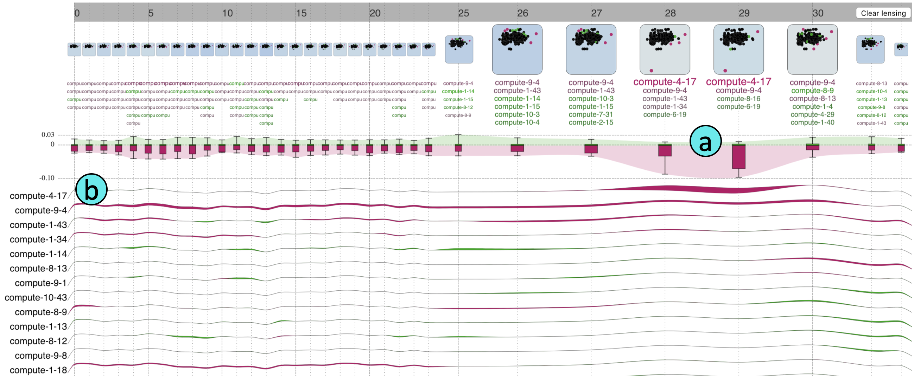

Outliagnostics: Visualizing Temporal Discrepancy in OutlyingSignatures of Data Entries
This page shows the use-cases not presented in our paper due to the space limit.
1. High Performance Computing Center
In this use case, we use Outliagnostics to monitor the healthstatus of a High-Performance Computing Center (HPCC) at a university. In particular, the 2 variables being monitored are CPU temperature and fan speed. As shown in Figure 1,the thicker outlying stream in the boxplot time series section(a) suggested to the users that there might be issues in this period. Also, the Compute 4-17 was placed on top of the item profile section (b) with a thicker outlying stream in this period. These suggested the HPCC system administrator look into the Compute 4-17 and later found that the fan was broken during that time. With this use in practice, we received positive feedback from real users in a real-world application with ease of use and ability to quickly spot the potential issues.

Figure 1: Monitoring health status of HPCC on Thursday, October 4, 2018: our system highlights compute-4-17 as an extreme outlier due to a broken fan.